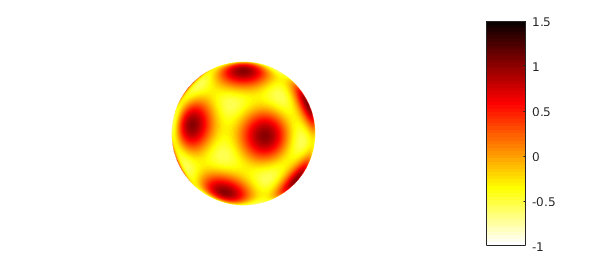
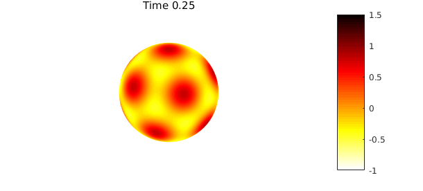
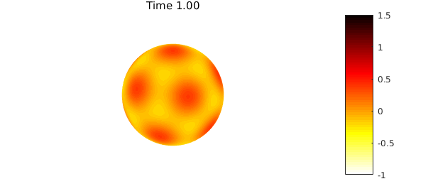
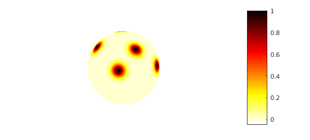
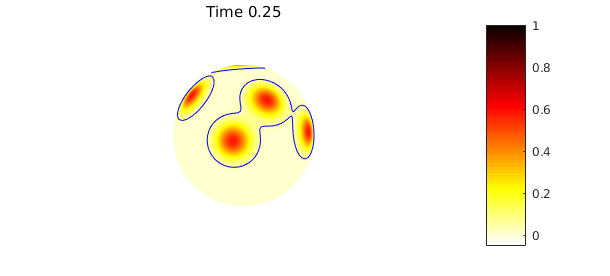
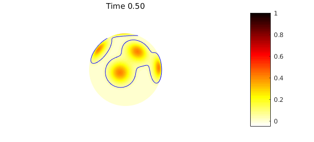
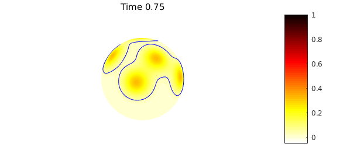
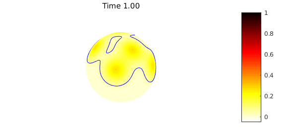

1. Introduction
Spherefun has about 100 commands for computing with scalar- and vector-valued functions [1]. There is also some functionality for solving partial differential equations with the poisson and helmholtz commands. In this example, we show how the latter can be used to solve the heat equation on the sphere using an implicit time-stepping scheme.
The example code presented here can easily be adapted to solve more complicated equations involving diffusion.
2. Heat equation on the sphere
The heat equation on the sphere is defined by \begin{equation} u_t = \alpha\nabla^2 u, \end{equation} where $\nabla^2$ is the surface Laplacian (Laplace-Beltrami) operator and $\alpha>0$ is the coefficient of thermal diffusivity. The definition is completed by imposing an initial condition $u(\lambda,\theta,0) = u_0(\lambda,\theta,0)$, where $-\pi \leq \lambda \leq \pi$ is the longitudinal coordinate on the sphere and $0 \leq \theta \leq \pi$ is the latitudinal coordinate.
3. Implicit time discretization
In this example we consider discretizing (1) using the second-order backward differentiation formula (BDF2). In this method, the time derivative $u_t$ in (1) is replaced by the second-order accurate approximation $u_t \approx (3u_{n+1} - 4u_{n} + u_{n-1})/(2\Delta t)$, where $\Delta t$ is the time step and $u_n$ denotes the (approximate) solution at time $t=n\Delta t$. Substituting this into (1) and solving for $u_{n+1}$ gives the following partial differential equation (PDE) for the approximate solution $u_{n+1}$: \begin{equation} 3 u_{n+1} - 2\Delta t \alpha \nabla^2 u_{n+1} = 4 u_{n} - u_{n-1}. \end{equation} This equation can be rearranged as follows to reveal that it is a standard Helmholtz equation: \begin{equation} \nabla^2 u_{n+1} + K^2 u_{n+1} = \frac{K^2}{3}(4 u_{n} - u_{n-1}), \end{equation} where $K^2 = -3/(2 \Delta t \alpha)$.
The Spherefun command helmholtz can be used to solve (3) with optimal complexity [2].
4. An example with an analytic solution
We first consider solving (1) with an initial condition given by the following sum of spherical harmonics $Y_{\ell}^{m}(\lambda,\theta)$: $$ u_0(\lambda,\theta,0) = Y_{6}^{0}(\lambda,\theta) + \sqrt{\frac{14}{11}} Y_{6}^{6}(\lambda,\theta), $$ which is sometimes called the soccer ball function. First, we construct this initial condition in Spherefun and plot it.
u0 = spherefun.sphharm(6,0) + sqrt(14/11)*spherefun.sphharm(6,5);
plot(u0), colormap(flipud(hot)), caxis([-1 1.5]), colorbar, axis('off')

Since $Y_{\ell}^{m}$ is an eigenfunction of the surface Laplacian with eigenvalue $-\ell(\ell+1)$, the exact solution to (1) with the above initial condition is $$ u(\lambda,\theta,t) = e^{-42\alpha t} u_0(\lambda,\theta). $$
The code below solves (1) numerically with the discretization given in (3) to time $t=1$ using a time step of $\Delta t = 0.01$ and $\alpha=1/42$. Note that to bootstrap the BDF2 method (2) we first solve for $u_1$ using one step of BDF1 (backward Euler).
dt = 0.01; % Time step
tfinal = 1; % Stopping time
nsteps = ceil(tfinal/dt); % Number of time steps
m = 20; % Spatial discretization
alpha = 1/42; % Diffusion constant
up = u0; % Previous time step
% Do one step of backward Euler
K = sqrt(1/(dt*alpha))*1i; % Helmholtz frequency for BDF1
u = spherefun.helmholtz(K^2*up, K, m, m);
K = sqrt(3/(2*dt*alpha))*1i; % Helmholtz frequency for BDF2
for n = 2:nsteps
rhs = K^2/3*(4*u - up);
up = u;
u = spherefun.helmholtz(rhs, K, m, m);
% Plot the solution every 25 time steps
if ( mod(n, 25) == 0 )
plot( u ), colormap(flipud(hot)), caxis([-1 1.5])
title(sprintf('Time %1.2f',n*dt)), colorbar, axis('off'), snapnow
end
end


The difference between the true solution and the computed solution is
utrue = exp(-42*alpha*tfinal)*u0; norm(u-utrue)
ans =
2.325280830910560e-05
The error here is dominated by temporal errors from the BDF2 method, as opposed to spatial discretization errors.
5. A more complicated example
In this second example we consider an initial condition for which there is no closed form solution. We set the initial heat profile to a sum of Gaussian bumps:
rng(10)
u0 = spherefun([]);
for bumps = 1:5
x0 = 2*rand-1; y0 = sqrt(1-x0^2)*(2*rand-1); z0 = sqrt(1-x0^2-y0^2);
u0 = u0 + spherefun(@(x,y,z) exp(-30*((x-x0).^2+(y-y0).^2+(z-z0).^2)));
end
plot(u0), colormap(flipud(hot)), colorbar, axis('off'), caxis([-0.05 1])

Since the sphere has no boundary, the total amount of heat is conserved: the mean of the solution at any time is equal to the mean of the the initial condition. We repeat the code above with this new initial condition, but now also plot a contour that tracks the mean of the initial condition solution, which can be computed using the command mean2:
meanu0 = mean2(u0); % Mean of initial condition
dt = 0.01; % Time step
tfinal = 1; % Stopping time
nsteps = ceil(tfinal/dt); % Number of time steps
m = 150; % Spatial discretization
alpha = 1/42; % Diffusion constant
up = u0; % Previous time step
% Do one step of backward Euler
K = sqrt(1/(dt*alpha))*1i; % Helmholtz frequency for BDF1
u = spherefun.helmholtz(K^2*up, K, m, m);
K = sqrt(3/(2*dt*alpha))*1i; % Helmholtz frequency for BDF2
for n = 2:nsteps
rhs = K^2/3*(4*u - up);
up = u;
u = spherefun.helmholtz(rhs, K, m, m); % Helmholtz solve
% Plot the solution every 25 time steps
if ( mod(n, 25) == 0 )
plot( u ), colormap(flipud(hot)), caxis([-0.05 1]), hold on
contour(u,[meanu0 meanu0],'b-'), hold off
title(sprintf('Time %1.2f',n*dt)), colorbar, axis('off'), snapnow
end
end




The numerical scheme preserves the mean value property to machine precision:
norm(meanu0 - mean2(u))
ans =
1.762479051592436e-15
6. Future
In the future we hope to extend the technology of the new spin2 command in Chebfun, which is based on exponential integrators for stiff PDEs, to Spherefun. This has the potential to allow problems like the heat equation to be solved much more efficiently and accurately in time.
7. References
[1] A. Townsend, H. Wilber, and G. B. Wright, Computing with function in polar and spherical geometries I. The sphere, to appear in SIAM J. Sci. Comp., 2016
[2] A. Townsend and G. B. Wright, Fast spectral methods for partial differential equations in spherical and polar geometries, manuscript in preparation, 2016.